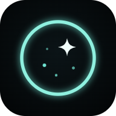

光子雨 · 夜视天文模拟器
关于 · 隐私说明 · 免责声明 · 数据许可
这是什么
光子雨（Phosphor Sky）是一台赛博夜视仪，透过增像管看星空——一个在浏览器里运行的夜视天文目镜模拟器：用公开巡天数据描述星云和恒星，用增像管（阴极、微通道板、荧光屏）的物理模型，在显卡上实时模拟每一个光子事件，展示不同增像管、滤镜和夜空条件下“目镜里大概会看到什么”。
本站免费、非商业，用于科普与研究，没有广告和付费内容。设置里有自愿打赏的入口（微信赞赏码、Ko-fi），打赏完全自愿，不解锁任何功能或内容。
隐私说明：不收集任何数据
- 没有统计、广告、账号或 Cookie。页面里没有任何分析或追踪代码，不会把你的操作、参数、设备信息发送到任何服务器。
- 参数只在链接里。分享链接
#s=…后面编码了模拟参数；按网页规范，#之后的内容不会发送给服务器，只有你把链接发给别人时对方才能看到。 - 本机存储。浏览器本地存储（localStorage）里只保存界面偏好：是否看过引导、画质选择、面板折叠状态、“我的增像管”的参数，以及程序出错时的错误记录（错误信息、版本号和页面路径）。为了下次打开更快，看过的星图等数据文件和网页本身也会缓存在这台设备上（Cache API 与 Service Worker），内容和服务器上公开的文件完全一样。这些都不会上传；可以在模拟器的“设置 → 本机”里清除，或清除浏览器的网站数据。
- 位置只在本机使用。手机的“实景模式”会请求定位和方向传感器，用来算出你此刻头顶的星空；计算全部在这台设备上进行，不发送到任何地方。为了下次直接开始，上次的大致位置（保留到 0.01°）存在本机，可在“设置 → 本机 → 清除本机界面记忆”清除；也可以拒绝定位，这时按时区估计经度。
- 错误记录只在本机。出错时你可以在“设置 → 本机 → 错误记录”里复制它，自己决定是否发给作者。复制的文字包含浏览器版本和屏幕尺寸，发送前可以看到全部内容。
- 托管服务。网页和数据文件由静态托管服务（目前是 GitHub Pages，可能经过 Cloudflare 等 CDN）提供，这些服务商可能按其自身政策记录常规访问日志（如 IP 地址）；本站不读取、不使用这些日志。
- 如果将来要加入任何访问统计，会事先在这里和模拟器中明确说明，并只在征得同意后启用。
免责声明：模拟结果不代表实物
- 画面、亮度、噪声和“等效参数纸”都是模型计算结果，用来理解增像管的原理和趋势，不代表任何品牌、型号或某一支具体增像管的实际观感或实测性能。预设名称只是参数组合，不是通用的产品规格。
- 模型依赖公开巡天数据、论文中的数值和若干假设（例如部分目标缺少实测的 [O III] 或 [S II] 图像、部分阴极与荧光屏曲线为估算）；这些缺口和假设在模拟器各处的“?”说明中有标注。实际目视效果还取决于望远镜、天气、个人视觉等，与模拟可能有明显差异。
- 请勿把模拟结果作为购买、交易、安全或任何专业用途的依据。夜视设备的购买和使用请遵守当地法律法规。
- 本站按“现状”提供，不对使用本站或依据模拟结果造成的任何后果承担责任。
数据来源与许可
本站只发布经过处理的衍生数据（重采样、换算单位、编码），不包含原始 FITS、论文原文或图片。各数据按来源要求署名；其中部分数据禁止商业使用，这也是本站保持非商业的原因之一。
0.9.43 新增天鹅座局部三线精细层、心脏／灵魂和英仙座双星团，分别使用 NSNS 巡天及 Gaia／Hipparcos 星表；沿用下列署名与非商业使用条款。
0.9.45 新增 10 个深空目标（NSNS）、仙王—仙后与英仙—御夫广域（NSNS＋Finkbeiner）、大麦哲伦云（SHASSA）及蝴蝶 IC 1318 精细层，来源与条款同下。
0.9.67 的银心周边连续谱由 111 张 SHASSA 原始重叠分场统一背景后拼接；采用实际观测，不使用生成图。M81／M82 沿用 NSNS 亮度与受限 PS1 形态。
0.9.58 新增 8 个大球状星团：恒星来自 Gaia DR3／依巴谷，背景沿用全天图（NSNS、SHASSA、Finkbeiner），星团中心未分辨的光是按 Harris 目录参数计算的模型；条款同下。
加州星云新增 MDW DR1 的 Hα 高频细层，整体定标保留 NSNS；OIII／SII 与连续谱槽沿用原数据。MDW 发布记录标注 CC BY 4.0，同时保留全部商业权利，本项目仅按非商业用途使用。MDW 巡天获 Michele and David Mittelman Family Foundation 资助；创始人与采集／处理人员为 David R. Mittelman、Dennis di Cicco、Sean Walker；最终处理、定标与发布由 Columbia University Astronomy Department 负责。引用 Aftab、Zhang、Walker、di Cicco、Mittelman、Gupta、Saydjari、Putman 与 Schiminovich（2025），MDW DR1 论文。去星填补区与亮星周围保守回退到 NSNS，细层并非独立的纯 Hα 光谱测量。
| 数据 | 用途 | 许可 / 署名要求 |
|---|---|---|
| NSNS DR0.2（S. Ziegenbalg） | 北天星云 Hα、[O III]、[S II] 图像 | CC BY-NC-SA 4.0：署名、非商业、相同方式共享。本站的 NSNS 衍生数据同样只能按此许可非商业使用。doi:10.3847/2515-5172/adfec7 |
| DSS2（UK Schmidt 底片） | 上帝之眼细节层 | 版权材料：底片版权属 Anglo-Australian Observatory / Royal Observatory Edinburgh，由 STScI 数字化；科研、教学和非营利用途可免费使用并署名，商用须许可 |
| SHASSA（Gaustad et al. 2001） | 南天 Hα 与连续谱 | 图像版权属 Las Cumbres Observatory, Inc.，科研和教育用途免费，商用须许可。致谢：the Southern H-Alpha Sky Survey Atlas (SHASSA), which is supported by the National Science Foundation（Gaustad, McCullough, Rosing & Van Buren 2001, PASP 113, 1326） |
| VPHAS+ DR4（ESO 177.D-3023） | 船底座、M8、M16 细节层 | ESO 科学档案，CC BY 4.0（Drew et al. 2014） |
| SDSS-V LVM | 上帝之眼谱线亮度 | SDSS 公开数据（Sánchez et al. 2026），按 SDSS 要求致谢；商业用途须 ARC 批准 |
| Carina Treasury / HST ACS | 船底星云锁孔核心的真实 F658N 形态 | NASA/ESA、Nathan Smith 团队、STScI/MAST，提案 10241/10475；Carina Treasury 科学拼图。重采样、恒星与缺口掩码，按 VPHAS+/SHASSA 匹配；含 [N II] 和连续谱，仅有覆盖处采用。 |
| Orion Treasury / ESO WFI | M42 核心周围的 Hα 波段形态；两晚短曝光，按 NSNS 定标，MUSE 核心保留 | Da Rio et al. 2009, ApJS 183, 261；ESO/MPIA 2.2 m WFI；MAST/STScI Orion Treasury 公共科学数据。进行了面积平均、去星掩码和 NSNS 低频匹配；含 [N II] 和连续谱，不是独立纯 Hα 测光。 |
| IPHAS DR2 / CDS | 眉月／新月 NGC 6888 的局部 Hα 波段细节；低信噪和伪影处回退 NSNS | IPHAS 团队；INT/Isaac Newton Group（La Palma，IAC）；Cambridge Astronomical Survey Unit；University of Hertfordshire，STFC ST/J001333/1；Barentsen et al. 2014。CDS HiPS：CNRS/Unistra，Buga M.，ODbL-1.0。仅形态近似，非独立纯 Hα 定标；组合数据保留 NSNS 非商业与相同方式共享要求。 |
| Pan-STARRS1 DR1（g 波段） | 上帝之眼及历史 atlas11 形态；M51、M101、狮子座三重奏仅采用受置信度与幅度限制的加法细节，亮度仍由 NSNS 决定 | 图像 © PS1 Science Consortium，经 CDS HiPS 获取，ODbL-1.0（Chambers et al. 2016；Flewelling et al. 2020）。致谢：The Pan-STARRS1 Surveys (PS1) and the PS1 public science archive have been made possible through contributions by the Institute for Astronomy, the University of Hawaii, the Pan-STARRS Project Office, the Max-Planck Society and its participating institutes, the Max Planck Institute for Astronomy, Heidelberg and the Max Planck Institute for Extraterrestrial Physics, Garching, The Johns Hopkins University, Durham University, the University of Edinburgh, the Queen's University Belfast, the Harvard-Smithsonian Center for Astrophysics, the Las Cumbres Observatory Global Telescope Network Incorporated, the National Central University of Taiwan, the Space Telescope Science Institute, the National Aeronautics and Space Administration under Grant No. NNX08AR22G issued through the Planetary Science Division of the NASA Science Mission Directorate, the National Science Foundation Grant No. AST-1238877, the University of Maryland, Eotvos Lorand University (ELTE), the Los Alamos National Laboratory, and the Gordon and Betty Moore Foundation. |
| Finkbeiner (2003) Hα 全天图 | 广域背景 | NASA LAMBDA 发布（含 WHAM、VTSS、SHASSA），署名 |
| Gaia DR3 | 恒星位置与亮度 | ESA/Gaia/DPAC，CC BY-NC 3.0 IGO（非商业），经 CDS VizieR 获取 |
| Gaia DR3 积分流量图（G／BP／RP，CDS HiPS） | 自由天空 550 nm 连续谱（银心 27° 外；已扣除画成点的星表星） | 数据 ESA/Gaia/DPAC（doi:10.5270/esa-qa4lep3）；HiPS 由 CDS 制作，CNRS/Université de Strasbourg，ODbL-1.0。衍生数据 continuum-gaia-v1 按 ODbL-1.0 单独发布，与 NSNS 衍生谱线并列（集合），不合并成一个衍生数据库。 |
| 依巴谷与第谷星表（ESA 1997） | 亮于 7 等的恒星 | ESA，经 CDS VizieR 获取，署名 |
| Harris 银河系球状星团目录（Harris 1996，2010 版） | 8 个球状星团中心未分辨光的模型参数（位置、积分星等与颜色、King 结构参数） | 编者免费提供；转供须注明原始出处且不得收费。引用 Harris, W. E. 1996, AJ 112, 1487（2010 edition） |
| ESO SkyCalc | 夜空、气辉与月光光谱 | ESO 天空模型（Noll et al. 2012；Jones et al. 2013），署名 |
| 天空辅助资料 | 星座连线与星座名、IAU 边界、411 颗 IAU 命名亮星、992 颗无名亮星的希腊字母、110 个梅西耶天体；1.3 起另有弗兰斯蒂德编号、13372 个 NGC/IC 天体、313 个 Sharpless H II 区、349 个 Barnard 暗星云、318 个中国星官与约 2950 颗中国传统星名 | Olaf Frohn / d3-celestial（BSD-3）；Davenhall、Leggett 1989 / CDS VI/49（科研用途，商用另查）；IAU WGSN（CC BY 4.0），中文传统名由本项目整理；OpenNGC（Mattia Verga，CC BY-SA 4.0，梅西耶与 NGC/IC 天体，中文俗名由本项目整理）；Hoffleit 与 Warren 1991，耶鲁亮星星表 / CDS VizieR V/50（科研用途，商用另查）；依巴谷星表（ESA 1997）/ CDS VizieR I/239；Sharpless 1959 / CDS VizieR VII/20；Barnard 1927 / CDS VizieR VII/220A（科研用途，商用另查）；中国星官：Stellarium 星空文化 “chinese”（Sun Shuwei 等，依据《仪象考成》，文字与连线 CC BY-SA）。仅用于辅助显示，不进入模拟读数或截图。 |
| 星图册资料 | 角尺寸、星等与模拟缩略图 | 角尺寸：Mattia Verga / OpenNGC（CC BY-SA 4.0）；Sharpless 1959 / CDS VII/20、Lynds 1965 / CDS VII/9（科学使用条件，保留逐条来源）。星等：SIMBAD / CDS。广域显示推荐视场；夜视小窗按推荐装备（L3 样例管）、固定种子 2 s 单张曝光与应用稳态显示生成，仍受原巡天许可约束。 |
| 星图册照片 | 卡片彩色照片 | Wikimedia Commons 上各作者的照片（CC0、公有领域、CC BY、CC BY-SA），由本项目按星表旋转为北上东左并裁剪；每张卡片标作者与许可并链接原图页，CC BY-SA 照片的裁剪版沿用同一许可。完整清单见 THIRD_PARTY_NOTICES.txt。 |
| CIE 表 | 光源与视见函数 | CIE 公开数值，署名 |
| 期刊论文 | 阴极、MCP、荧光屏等参数 | 只引用数值和关系，不包含论文的文字、表格或图片 |
完整的第三方声明（含算法与软件许可）见 THIRD_PARTY_NOTICES.txt。如果你是某项数据的权利人并对使用方式有疑问，请通过下方方式联系，会及时处理。
联系
作者：英国高级出摊工程师 · B 站／小红书：@英国高级出摊工程师
反馈问题时，可以附上模拟器“设置 → 本机 → 错误记录”里复制的内容，以及出问题时的分享链接。